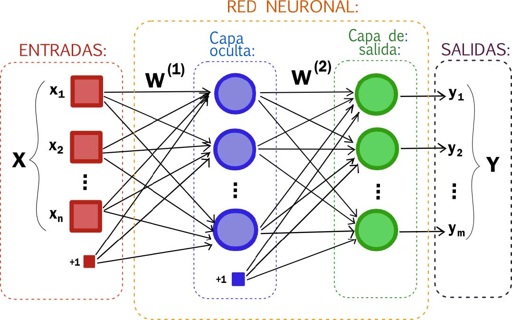
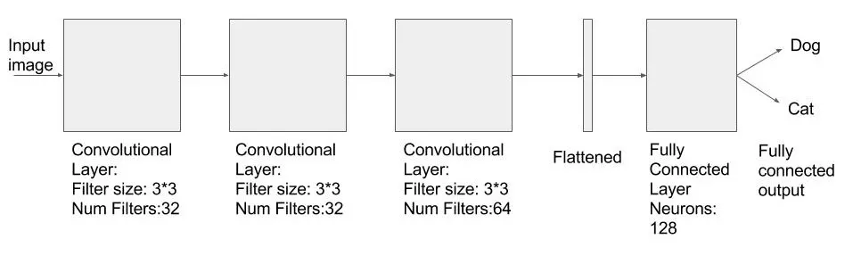

Este es un mini proyecto sobre clasificación de imágenes para responder a la imagen de entrada si es un perro y gato con algoritmo de aprendizaje automático llamado redes neuronales convolucionales.
La red que se implemento en este proyecto es pequeña y simple (que las que se usan para resolver problemas del mundo real) para que también pueda entrenar esto en su CPU. Mientras se entrena, las imágenes de las clases (perros / gatos) se alimentan a una capa convolucional que es seguida por 2 capas convolucionales más. Después de las capas convolucionales, aplanamos la salida y agregamos dos capas completamente conectadas al final. La segunda capa completamente conectada tiene solo dos salidas que representan la probabilidad de que una imagen sea un gato o un perro.
